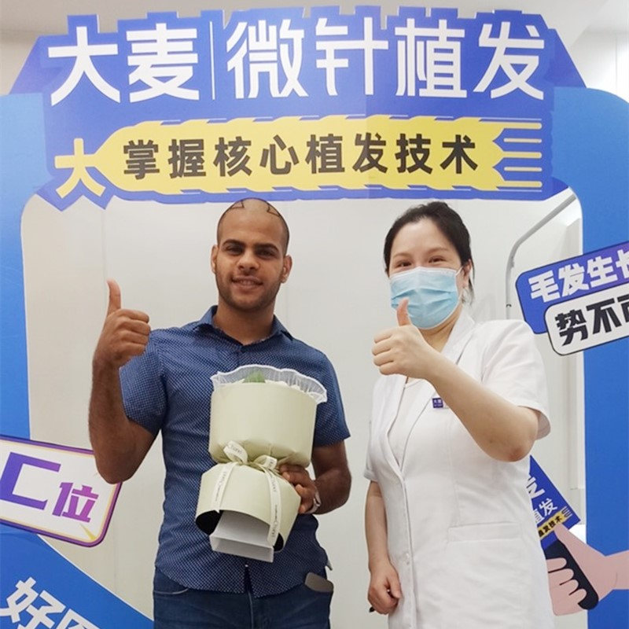

Comprehensive solutions for all types of hair loss. Advanced microneedle technology for natural, long-lasting results.
We offer a full range of hair restoration services to meet your unique needs
Personalized hairline design for natural results that complement your facial features, using advanced microneedle technology to restore a youthful appearance.
Learn MorePrecision microneedle implantation increases density while maintaining natural growth direction, achieving higher density implantation for thicker, fuller hair.
Learn MoreComprehensive restoration for all stages of crown baldness, using our patented microneedle technology to achieve natural coverage results.
Learn MoreNatural-looking eyebrow restoration with precision implantation designed to complement your facial aesthetics, bringing fullness and dimension.
Learn MoreArtistic implantation creates a well-designed beard or mustache, filling sparse areas to create a masculine look that complements your features.
Learn MorePrecision implantation to restore or enhance your sideburns, creating natural density and shape that complements your face.
Learn MoreMulti-site body hair transplantation with careful implantation ensuring natural growth direction and density for a highly realistic appearance.
Learn MoreComprehensive hair loss treatment including medication therapy, PRP treatment, and scalp care programs to prevent further hair loss and promote healthy growth.
Learn MoreProfessional hair care including personalized scalp care, nutritional therapy, and maintenance programs to support long-term hair health.
Learn MoreRestore Your Natural Hairline
Our advanced hair transplant procedure uses the latest microneedle technology to extract and transplant hair follicles with precision. Whether you're dealing with male pattern baldness, receding hairline, or crown thinning, we can help.

Achieve Your Dream Beard
Whether you want a full beard, goatee, or mustache, our beard transplant procedure can help you achieve the look you desire. Using advanced microneedle technology, we transplant hair follicles from the scalp to create a natural-looking beard.

Frame Your Face with Beautiful Eyebrows
Thin or sparse eyebrows can be restored with our specialized eyebrow transplant procedure. We carefully transplant hair follicles to create natural-looking eyebrows that complement your facial features.

Camouflage Scars with Hair Transplant
Scars from previous surgeries, accidents, or injuries can be effectively concealed with hair follicle transplantation. Our skilled surgeons can help restore hair growth over scarred areas.

Restore Your Confidence
Women experience hair loss differently than men, and our specialized female hair transplant procedures are designed to address these unique concerns. From diffuse thinning to hairline recession, we can help you regain your beautiful hair.

Redesign Your Natural Hairline
Our hairline transplant procedure is designed to create a natural, age-appropriate hairline that frames your face perfectly. Using advanced microneedle technology, we carefully place each graft to achieve seamless results.

Achieve Thicker, Fuller Hair
Precision microneedle implantation increases density while maintaining natural growth direction, achieving higher density implantation for thicker, fuller hair. Ideal for those experiencing thinning or diffuse hair loss.

Comprehensive Restoration for All Stages
Comprehensive restoration for all stages of crown baldness, using our patented microneedle technology to achieve natural coverage results. Whether you have mild thinning or advanced baldness, we can help restore your confidence.

Restore Natural Density and Shape
Precision implantation to restore or enhance your sideburns, creating natural density and shape that closely frames your face. Our technique ensures the transplanted hair grows in the correct direction for a natural look.

Multi-Site Body Hair Transplantation
Multi-site body hair transplantation with careful implantation ensuring natural growth direction and density for a highly realistic appearance. We can transplant hair to various areas of the body using follicles from the scalp or other donor sites.

Comprehensive Solutions for Hair Loss
Comprehensive hair loss treatment including medication therapy, PRP treatment, and scalp care programs to prevent further hair loss and promote healthy growth. Our multi-faceted approach addresses the root causes of hair loss.

Maintain and enhance your transplanted hair with our professional-grade products
Gentle, sulfate-free formula designed for transplanted hair.
Deep conditioning treatment to nourish hair follicles.
Stimulating serum to promote healthy hair growth.
Natural oils to support hair follicle health.
Schedule your free consultation today and take the first step towards a fuller, healthier head of hair
Everyone's hair loss journey and solution are unique due to a variety of factors. Our hair restoration experts will assist you in determining the root cause and a suitable solution for your hair restoration plan. If you have any questions, please ask; we are happy to assist.
+86 18618396621


hanying@damaizf.com